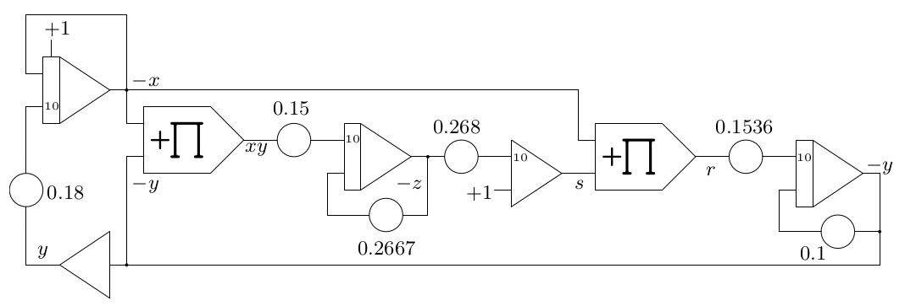
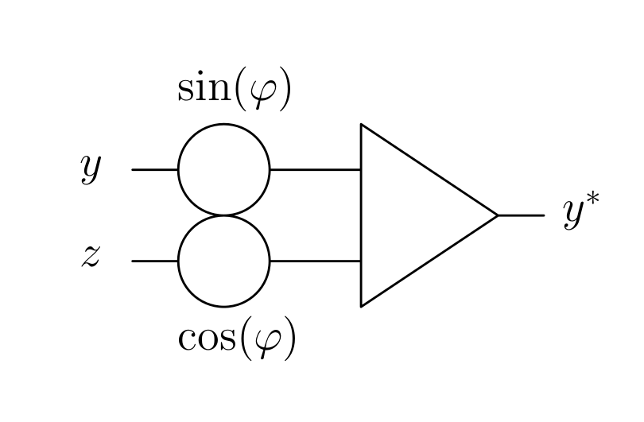

Quickstart-guide: Damped oszillation
The modeling of a damped oscillation is a good starting point for analog programming beginners. This article shall give a detailed step by step explanation how to implement a simulation on The Analog Thing by describing the system with a differential equation, deriving a computer circuit using the full repatriation method (originally developed by Lord Kelvin around 1875) and to get results on an oscilloscope.
There are four major steps to execute a simulation on an analog computer, all of which are equally crucial:
Describe the to be simulated system with differential equations
Derive a computer circuit from these equations
Wire the computer circuit on the analog computer (including connection to output device) and adjust parameters
Choose operation mode and viable visualization method (usually oscilloscopes).
This article will focus on point 2. to 4. and requires a basic understanding of differential equations.
1. Mathematical description of a damped oscillation
The first and often hardest step of modeling a to be simulated system on an analog computer is to give an exact mathematical description of the system in the form of differential equations. For this example the full description is rather short:
Find all acting forces, three in this case:
- Spring force Fs = k*x;
k = spring coefficient, x = deflection
- Inertia force Fm = m*a;
m = mass, a = acceleration
- Damper force Fd = d*v;
d = damper coefficient, v = velocity
Set the sum of all forces to zero (definition of an isolated system):
- Fm + Fd + Fs = 0
- m*a + d*v + k*x = 0
Replace the velocity v with ẋ and the acceleration a with ẍ:
v = ẋ
the velocity equals the first derivative of x
a = ẍ
the acceleration equals the second derivative of x
m*a + d*v + k*x
= m*ẍ + d*ẋ + k*x = 0
Now we have an exact description of the damped oscillation in the form of a differential equation.
In outlook of step 2, solve this equation for the highest derivative in order to execute the full repatriation later on:
|
|
2. Derivation of a computer circuit
At first, we need to understand three basic computing elements which can probably be found on every electrical analog computer:
Basic computing parts:
Description |
Circuit symbol |
|---|
The coefficient potentiometer, which is used to multiply an input x with the factor a so a*x is generated.
Note: a can only accept values between 0 and 1!
Can also be used as dividing factor so x/a is generated.
|
|
The inverter // summer, the input (or inputs) can be found on the left and the output on the right.
Note: Due to technical reasons the output of a summer is negated! Input: x,y –> Output: -(x+y)
At the basis of the output inversion a summer with one input functions as inverter and therefore the summer and the inverter share the same circuit symbol.
|
|
The integrator, the input (or inputs) can be found on the left and the output on the right.
Coming from above you find ẋ0, which represents the starting condition of the integrator (often referred to initial condition) and can be thought of as the integration constant. When there is no initial condition drawn in the circuit, it is set to 0.
Note: Due to technical reasons the output of an integrator is negated! ẍ –>-ẋ
Electrical analog integrators can only integrate over time.
|
|
With these basic computing elements we are able to generate ẍ = -(d*ẋ + k*x) / m.
Deriving the actual circuit:
The basic idea of the full repatriation method is to solve the differential equation for it´s highest derivative and assume it (in this case ẍ) as input of the first integrator. From there on you add computing elements to generate -(d*ẋ + k*x) / m, which will then be given as input of the first integrator to close the circuit.
Description |
Circuit |
|---|
As mentioned above, start with an integrator and assume the highest derivative as input.
ẍ represents the deflection over time. If ẋ0 is set to 1, the damped oscillation starts with maximum velocity.
|

|
When putting another integrator behind the first, you can generate -ẋ and x |

|
To generate ẋ from -ẋ, branch off the circuit behind the first integrator and put the second wire in an inverter. |
|
Insert two coefficient potentiometers to give ẋ and x their coefficients.
k = spring coefficient
d = damper coefficient
To generate d*ẋ and k*x
|
|
Merge the outputs of the coefficient potentiometers in a summer.
Note the sign change, which is rather useful for this case.
Output: -(d*ẋ + k*x)
|
|
As last computing part add another coefficient potentiometer to divide the output of the summer with the mass coefficient.
Output: -(d*ẋ + k*x) / m
|
|
Next to final step is to close the computing circuit by connecting the output of the last potentiometer with the input of the first integrator.
The sign is already correct.
|
|
Lastly, branch off the circuit at a given point to use it later on with a given interface.
In this case the circuit is branched just after the inverter to make the signal (in this case the velocity over time) visible on an oscilloscope later on.
Usually, outputs are drawn as arrows.
|
|
3. Wiring the circuit on a THAT and adjusting parameters
In order to wire the circuit worked out above you need to be familiar with the computing elements used.
THAT-overview
Description |
Images |
|---|
On the right side you find an overview image of The Analog Thing without wiring.
It has much more computing parts than needed for this task.
Important basics:
Round/circular panels –> Inputs
Triangular panels –> Outputs
Rectangular panels –> Static signals and advanced things
Black inputs (with a 10 next to it) are not important for this task.
Important for integrators:
IC-panel: IC refers to initial condition and is used to set the starting condition of the integrator.
If the IC panel is left open, the initial condition is set to zero.
|
|
In this image the for this task important computing elements, panels and switches are highlighted.
Note that you certainly do not need every marked computing element, just some of each type.
|
|
From this point you can start wiring the actual simulation circuit.
Wiring THAT
Colors from circuit scheme and actual images are matched to make them easier to identify, but have no further meaning.
Description |
Circuit |
Images |
|---|
Step 1:
Start with the first integrator.
Set the initial condition of the integrator to 1 by connecting the IC-panel with the panel directly below (rectangular +1, green wire).
Also, connect a blue wire to the first integrators input and a red wire to it´s output, but leave them open.
The blue wire shall be the last wire to be closed at the end.
|
|
|
Step 2:
Connect the output of the first integrator (red wire) to the input of the second integrator.
Connect a yellow cable to the output of the second integrator.
|
|
|
Step 3:
Connect the second output of the first integrator with the input of the first inverter with a red wire.
Be careful not to mix up the SJ panel of the inverter with the input panel.
Connect a black cable to the output of the first inverter.
|
|
|
Step 4:
Connect the output of the second integrator (yellow wire) with the input of the first potentiometer.
Connect the output of the inverter (black wire) to the input of the second potentiometer.
Connect both outputs of the just cabled potentiometers with green wires.
Note: For practical reasons potentiometers are usually numbered in the to be executed circuit plan.
|
|
|
Step 5:
Connect both potentiometer outputs (green wires) each with an input of the summer.
Connect a red wire to the output of the summer.
|
|
|
Step 6:
Connect the output of the summer (red wire) with the input of the third potentiometer.
Connect the input of the first integrator (blue wire) with the output of the third potentiometer.
The circuit is closed.
|
|
|
Step 7:
Connect the output of the inverter with an output panel (x, y, z or u) by plugging a yellow wire on top of the black wire connected with said output.
|
|
|
Wiring complete.
4. Operation and visualization
{kind=link}
{kind=link}
{kind=link}
{kind=link}
{kind=link}
{kind=link}
{kind=link}
{kind=link}
{kind=link}
{kind=link}
{kind=link}
{kind=link}
{kind=link}
{kind=link}
{kind=link}
{kind=link}
{kind=link}
{kind=link}
{kind=link}
{kind=link}
{kind=link}
{kind=link}
{kind=link}
{kind=link}
{kind=link}
{kind=link}
{kind=link}
{kind=link}
{kind=link}